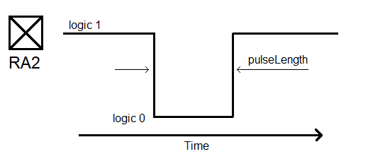
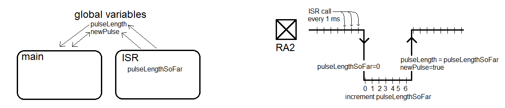

| Lecture: | 15 |
| Objective: | To reinforce how an interrupt service routine is called and shares the processor with main. |
Interrupts
Last class we went over the big picture of interrupts and how to write a program to generate a waveform using a timer 0 interrupt. Some lessons that we learned...- An interrupt service routine (ISR) is a function that is called by hardware.
- ISR has no input parameters and does not return a value.
- In our development environment you will declare an ISR:
void high_priority interrupt tmr0_isr(void)
- The event that causes the hardware to call the ISR is called an interrupt and generally corresponds to setting a hardware flag.
- Before leaving the ISR you need to clear the hardware flag.
- To generate a interrupt, you must set the interrupt enable bit for the hardware subsystem and set global interrupts by setting the INTCONbits.GIE bit.
- ISRs use "static" variables to retain values between ISR invocations.
- ISR's use global variables to share values with main.
Processor timeline with an active interrupt
Lets examine how the processor reacts when its running the program given in the basicInterrupt.c program linked at the top of this web page.
| Device | 0 | 1 | 2 | 3 | 4 | 5 | 6 | 7 | 8 | 9 | 10 |
| CPU | main | ||||||||||
| TMR0 | 0xB000 | ||||||||||
| TMRIF | Logic 0 | ||||||||||
| RC0 | Logic 1 |
Example Interrupt Problem
The goal of this exercise is to write a program, consisting of an ISR and main, that measure (an approximate) duration of a pulse on pin RA2 and light an LED on pin RC0 is the pulse if 50ms or longer. The image below shows an example of csuch a pulse on RA2. You program should store the duration of the pulse, in milliseconds, in a variable pulseLength. Hence, if the pulse was 123.4 ms, your program would assign the variable pulseLength the value 123.
Your program will divide this task into two parts, the ISR will:
- Use TMR0 to interrupt once every milliscond,
- Holds the intermediate pulse duration in a local variable,
- Write the pulse duration in a global variable,
- On every rising edge of RA2, set a global flag true.
- Wait for the flag indicating a new pulse,
- If the pulse length is less than 50ms turn an LED on.

Now let's turn this into code. The top of your program should contain the global variables. Their initial values are only that, first values. These initial values can be overwritten and changed by your program.
Next, main. This is pretty straightforward, just poll the newPulse flag and then check if the pulse was 50ms or longer.
The ISR is really where the action happend. The ISR looks first for a negative edge on pin RA2. This is characterized by the previous value of RA2 (on the last interrupt) being logic 1 and the current value of RA2 (during this interrupt) being logic 0. I set the pulseLengthSoFar variable to 0 so that we can start counting the number of interrupt cycles that RA2 is logic 0, by incrementing the pulseLengthSoFar variable. Since we need to maintain the value of this variable between ISR "calls", the variable is typed "static", meaning its value does not go away when we leave the ISR, instead, the next time we enter the ISR, the pulseLengthSoFar variable will have the value it had when we last left the ISR (1ms ago). Any initialization of a static variable pertains to just the first ISR invocation. The initialization statement for a static variable is not used on any subsequent ISR invocation.
Likewise, the prevRA2 variable needs the value that we assigned it on the previous ISR call (1ms ago). The currRA2 variable is set by reading PORTAbits.RA2, the logic level on pin RA2. One of the last things that we do in the ISR is to assign the prevRA2 variable the value stores in currRA2. This is because when we leave to the ISR, we will return in 1ms. In the future, what we consider to be the current value of RA2 will be the previous value of RA2.
When the ISR detects a positive edge on the RA2 pin, it writes the pair of global variables. The final else condition is only executed when the currRA2 == prevRA2 == 0. In this case, the pulse is at logic 0. Consequently, we increment the pulseLengthSoFar variable to indicate that the RA2 pin has spent yet another millisecond at logic 0.
// Global variables
uint8_t pulseLength = 0;
uint8_t newPulse = false;
void main(void) {
INIT_PIC();
for (;;) {
while (newPulse == false);
newPulse = false;
if (pulseLength > 50) LATCbits.LATC0 = LED_ON;
} }
void ISR(void) {
static uint8_t pulseLengthSoFar = 0;
static uint8_t prevRA2 = 1;
uint8_t currRA2;
currRA2 = PORTAbits.RA2;
if ( (prevRA2 == 1) && (currRA2 == 0) ) { // negative edge
pulseLengthSoFar = 0;
} else if ( (prevRA2 == 0) && (currRA2 == 1) ) { // positive edge
pulseLength = pulseLengthSoFar;
newPulse = true;
} else if (currRA2 == 0) { // pulse is low
pulseLengthSoFar += 1;
}
prevRA2 = currRA2; // current value is previous value 1ms from now
INTCONbits.TMR0IF = 0; // clear flag for next interrupt
TMR0 = 0x1000 - 1000; // 1,000 counts at 1:16 presaler = 1ms
}
Test your understanding
You can find the solutions embedded in the "source code" for this web page by right mouse clicking on this web page and selecting "view source". The solutions are in HTML comments.- Modify basicInterupt.c to look at the active high button connected to RA2 every 10 ms and generate a 0.25 second long pulse if the button is pressed.
- Modify basicInterupt.c to debounce the active high button attached to RA0. Switch bouncing occurs because mechanical switches have mechanical contacts that literally bounce when making or breaking contact. Here is a good video showing the output of a switch that exhibits switch bouncing. In order to debounce a switch, I want you to sample the switch you value every 10 ms. Based on the sampled values, you should update a global variable cleanButton. You should only change the value of cleanButton when there is overwhelming evidence that it is the wrong value. Overwhelming evidence is the presence of 8 consecutive samples of the button which disagree with the value in cleanButton.
- Create an ISR on compare channel 0 that is called every 10ms. If the ISR detects that an active high button on RA1 is being pressed, generate a 1 second long pulse on RA2. While generating the 1 second pulse, your ISR should not be using all the CPU cycles.